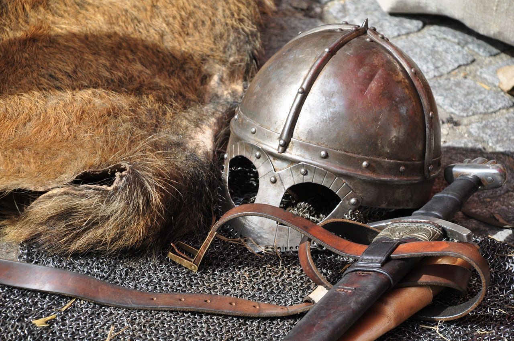

Scholarships
Fletchisons' many independently overseen scholarships allow even the dirtiest lowly peasant to sell themselves or their families into indentured servitude so that they might line the pockets of Fletchisons' esteemed professors.
While applying, simply check the box if you require a scholarship to attend. If it is decided that you shall be admitted, a scholarship offer will be attached to your acceptance letter.
Though different every year due to the rapidly shifting landscape of sponsors, here is a smattering of past scholarships to get an idea of what you're getting into:
- Prince Dubloon sponsored Yara the Wood Elf to study to become a Ranger. Upon graduation, Yara slew the mighty dragon Nazarrah who had for many years terrorized Prince Dubloon's kingdom. Or, should have, had Yara not perished in the attempt.
- After Spookaloo the Tiefling traded their family's souls for a degree in Paladin, they fell out of favor with their Good-leaning God and lost their recently earned status.
- Fitting for someone who studied the art of the Rogue, Samwell Tiding staged an arson to net his unnamed benefactor a tidy sum from insurance.
- After Lady Alabaster's lost her teeth to a methamphetamine addiction, she sponsored a student to chew her food for her thrice daily for the rest of her days.
Ready to sell your soul for something that ought to be free? Apply today.
Apply